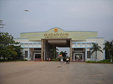
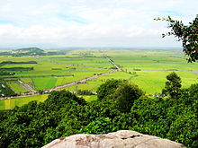
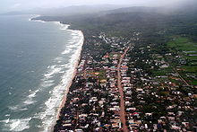
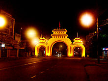
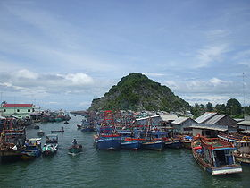
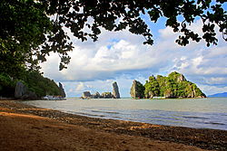
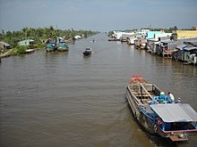
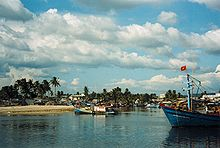
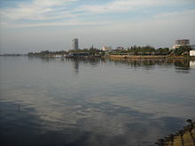

Giới thiệu tỉnh Kiên Giang
Tỉnh

Hòn Phụ tử ở huyện Kiên Lương
| Vùng |
Đồng bằng sông Cửu Long
|
| Tỉnh lỵ |
Thành phố Rạch Giá
|
| Trụ sở UBND |
Số 06 Nguyễn Công Trứ, phường Vĩnh Thanh, thành phố
Rạch Giá
|
| Phân chia HC |
2 thành phố, 13 huyện
|
| Thành lập |
1976
|
| Đại biểu quốc hội ̣ |
9
|
| Tổng cộng |
1.723.067 người
|
| Dân tộc |
Kinh, Hoa, Khmer
|
Kiên Giang là một tỉnh ven biển thuộc vùng đồng bằng sông Cửu Long ở niềm Nam,Việt Nam.
Năm 2018, Kiên Giang là đơn vị hành chính Việt Nam đông thứ 11 về số dân, xếp thứ 20 về Tổng sản phẩm trên địa bàn (GRDP), xếp thứ 31 về GRDP bình quân đầu người, đứng thứ 39 về tốc độ tăng trưởng GRDP. Với 1.810.500 người dân, GRDP đạt 87.284 tỉ Đồng (tương ứng với 3,7908 tỉ USD), GRDP bình quân đầu người đạt 48,21 triệu đồng (tương ứng với 2.084 USD), tốc độ tăng trưởng GRDP đạt 7,51%.
Kiên Giang gồm phần lớn diện tích của tỉnh Rạch Giá và toàn bộ tỉnh Hà Tiên cũ. Đây là tỉnh có diện tích lớn nhất vùng Tây Nam Bộ và lớn thứ hai ở Nam Bộ (sau tỉnh Bình Phước). Tuy nhiên, vào thời nhà Nguyễn toàn bộ diện tích tỉnh Kiên Giang ngày nay đều thuộc tỉnh Hà Tiên.
| Mục lục |
1. Địa lý
2. Lịch sử
3. Hành Chính
4. Văn Hóa - Du lịch
5. Dân cư |
Địa Lý

Cửa khẩu Quốc tế Hà Tiên
Kiên Giang nằm tận cùng phía Tây Nam của Việt Nam, trong đó lãnh thổ bao gồm đất liền và hải đảo. Phần đất liền nằm trong tọa độ từ 9°23'50 - 10°32'30 vĩ Bắc và từ 104°26'40 - 105°32'40 kinh Đông.
Phía Bắc giáp Campuchia, đường biên giới dài 56,8 km
Phía Nam giáp các tỉnh Bạc Liêu, Cà Mau
Phía Đông lần lượt tiếp giáp với các tỉnh là An Giang, Hậu Giang và thành phố Cần Thơ.
Phía Tây giáp vịnh Thái Lan với đường bờ biển dài 200 km
Trung tâm tỉnh là thành phố Rạch Giá, cách Thành phố Hồ Chí Minh 250 km về phía Tây. Kiên Giang tiếp giáp Campuchia ở phía Bắc với đường biên giới dài 54 km. Vịnh Thái Lan ở phía Tây có đường bờ biển dài hơn 200 km. Ngoài ra Kiên Giang có hơn 100 đảo lớn nhỏ.
Kiên Giang nằm ven biển thuộc phía Tây Nam của Việt Nam, là vùng đất thuộc trấn Hà Tiên cũ do Tổng trấn Mạc Cửu khai phá vào thế kỷ 17. Đầu thế kỷ 18, Mạc Cửu được chúa Nguyễn thuần phục. Vào thời vua Minh Mạng Hà Tiên là một trong sáu tỉnh Nam Kỳ. Sau năm 1975 thành lập tỉnh Kiên Giang cho đến ngày nay.
Kiên Giang được nhiều người biết đến là vùng đất văn hóa và du lịch nổi tiếng bậc nhất ở khu vực Đồng bằng sông Cửu Long. Cảnh đẹp của Kiên Giang ngày xưa từng được ca ngợi qua "Hà Tiên thập vịnh". Đến ngày nay Kiên Giang được nhiều người biết đến qua danh thắng du lịch nổi tiếng là Hòn Phụ Tử (gãy hòn Phụ, còn hòn Tử)và đảo Phú Quốc. Ngoài ra, Kiên Giang còn có tiềm năng kinh tế với nguồn lợi vô cùng to lớn về thủy sản. Tỉnh lỵ của Kiên Giang là thành phố Rạch Giá, một trong hai thành phố biển ở Đồng bằng sông Cửu Long (Hà Tiên & Rạch Giá).
Kiên Giang có vị trí chiến lược quan trong, nằm trong vùng vịnh Thái Lan, gần với các nước thuộc Đông Nam Á như Campuchia, Thái Lan, Malaysia, Singapore, Chính vì vậy Kiên Giang có nhiều điều kiện thuận lợi trong việc mở rộng giao lưu kinh tế với các nước trong khu vực, đồng thời đóng vai trò cầu nối các tỉnh miền Tây Nam Bộ với bên ngoài.
❖ Điều kiện tự nhiên

Một cánh đồng rộng lớn tại
Hòn Đất

Bờ Biển Phú Quốc
Kiên Giang có đủ các dạng địa hình từ đồng bằng, núi rừng và biển đảo. Trong đó, phần đất liền có địa hình tương đối bằng phẳng, thấp dần từ đông bắc xuống tây nam. Do nằm ở vĩ độ thấp và giáp biển nên Kiên Giang có khí hậu nhiệt đới gió mùa, nóng ẩm quanh năm nhiệt độ trung bình hàng tháng từ 27 – 27,50C. Kiên Giang không chịu ảnh hưởng trực tiếp của bão nhưng lượng nước mưa do bão chiếm một tỷ trọng đáng kể, nhất là vào cuối mùa mưa. Mùa mưa bắt đầu từ tháng 4 đến tháng 11, mùa khô từ tháng 12 đến tháng 3 năm sau. Lượng mưa trung bình hàng năm khoảng 1.600 – 2.000 mm ở đất liền và 2.400 – 2.800 mm ở vùng đảo Phú Quốc[9]. Khí hậu Kiên Giang rất ít thiên tai, không rét, không có bão đổ bộ trực tiếp, ánh sáng và nhiệt lượng dồi dào, nên rất thuận lợi cho nhiều loại cây trồng và vật nuôi sinh trưởng.
Kiên Giang có 4 vùng đất đai chính là vùng phù sa ngọt thuộc tây sông Hậu, vùng phèn ngập lũ thuộc tứ giác Long Xuyên, vùng nhiễm mặn thuộc bán đảo Cà Mau và vùng đồi núi, hải đảo ở hai huyện Phú Quốc và Kiên Hải. Trong đó, Đất nông nghiệp, chiếm 64,2% diện tích tự nhiên, đất rừng chiếm 122,8 nghìn ha, đất chuyên dùng 35,4 nghìn ha, đất ở 10,1 nghìn ha. Ngoài ra tỉnh còn có trên 70 nghìn ha đất hoang hoá và sản xuất chưa ổn định với hơn 25 nghìn ha vườn tạp. Rừng tại Kiên Giang rất ít, chủ yếu là rừng phòng hộ. Kiên Giang là tỉnh có tiềm năng khoáng sản tương đối lớn mặc dù đang ở mức thăm dò, nghiên cứu nhưng bước đầu đã xác định được 152 điểm quặng và 23 mỏ khoáng sản các loại khác. Trữ lượng đá vôi toàn tỉnh hiện có 440 triệu tấn, có khả năng khai thác 342 triệu tấn, trong đó trữ lượng khai thác công nghiệp là 235 triệu tấn, đủ nguyên liệu để sản xuất 4,6 triệu tấn clinker/năm trong suốt 40 năm. Than bùn, ước tính còn khoảng 150 triệu tấn.
Nền nông nghiệp của Kiên Giang là nông nghiệp trồng lúa nước. Đất canh tác không tập trung nhưng phần lớn phân bố ở ven các trung tâm huyện. Trên Quốc lộ 61 có một vùng trồng lúa ven nội ô huyện Giồng Riềng ngoài ra còn có đất canh tác của các gia đình nằm sâu trong những xóm nhỏ. Xen kẽ với việc trồng lúa nước là các loại hoa màu và một số cây có giá trị công nghiệp cao như dừa, khóm...
Kiên Giang là tỉnh có nghề đánh bắt hải sản phát triển. Với bờ biển dài trên 200 km, có diện tích biển khoảng 63.000 km2, Kiên Giang tiềm năng rất phong phú để phát triển kinh tế biển. Đây là một lĩnh vực mà tỉnh có lợi thế hơn hẳn so với nhiều tỉnh khác trong khu vực đồng bằng sông Cửu Long. Nước mắm Phú Quốc là một thương hiệu nước mắm nổi tiếng không những trong phạm vi cả nước mà còn trên bình diện quốc tế.
Lịch sự
❖ Tỉnh Kiên Giang từ năm 1976 đến nay
Tháng 2 năm 1976, Chính phủ Việt Nam quyết định tái lập tỉnh Kiên Giang trên cơ sở toàn bộ diện tích tỉnh Rạch Giá và ba huyện: Châu Thành A, Hà Tiên, Phú Quốc vốn thuộc tỉnh Long Châu Hà trước đó. Lúc này, huyện Châu Thành A bị giải thể và sáp nhập trở lại vào huyện Châu Thành như trước. Tỉnh Kiên Giang lúc đó gồm thị xã Rạch Giá và 8 huyện: An Biên, Châu Thành, Giồng Riềng, Gò Quao, Hà Tiên, Phú Quốc, Tân Hiệp, Vĩnh Thuận. Tỉnh lỵ là thị xã Rạch Giá.
TNgày 3 tháng 6 năm 1978, Hội đồng Chính phủ ban hành Quyết định số 125-C về việc chia huyện Châu Thành thuộc tỉnh Kiên Giang thành hai huyện lấy tên là huyện Hòn Đất và huyện Châu Thành thuộc tỉnh Kiên Giang. Theo đó, huyện Hòn Đất gồm có các xã Nam Thái Hoa, Mỹ Lâm, Sóc Sơn của huyện Châu Thành cũ và xã Bình Sơn của huyện Hà Tiên cắt sang. Địa bàn huyện Hòn Đất thuộc tỉnh Kiên Giang ngày nay chính là địa bàn huyện Châu Thành A thuộc tỉnh Rạch Giá và sau đó thuộc tỉnh Long Châu Hà trước năm 1976, còn địa bàn huyện Châu Thành phần còn lại sau khi chia tách cũng chính là địa bàn huyện Châu Thành B thuộc tỉnh Rạch Giá cũ.
Ngày 14 tháng 1 năm 1983, Hội đồng Bộ trưởng ban hành Quyết định số 4-HĐBT về việc thành lập huyện Kiên Hải thuộc tỉnh Kiên Giang.
Ngày 13 tháng 1 năm 1986, Hội đồng Bộ trưởng ban hành Quyết định số 7-HĐBT về việc chia huyện An Biên thuộc tỉnh Kiên Giang thành hai huyện lấy tên là huyện An Biên và huyện An Minh.
Ngày 8 tháng 7 năm 1998, Chính phủ Việt Nam ban hành Nghị định số 47/1998/NĐ-CP về việc thành lập thị xã Hà Tiên và thành lập các phường thuộc thị xã Hà Tiên, tỉnh Kiên Giang. Theo đó, thành lập thị xã Hà Tiên trên cơ sở toàn bộ diện tích và dân số của thị trấn Hà Tiên, xã Thuận Yên (trừ 2.732 ha diện tích tự nhiên và 3.302 nhân khẩu giao về xã Phú Mỹ quản lý), xã Mỹ Đức và xã Tiên Hải thuộc huyện Hà Tiên. Sau khi điều chỉnh địa giới hành chính để thành lập thị xã Hà Tiên, huyện Hà Tiên còn lại 89.548,5 ha diện tích tự nhiên và 62.162 nhân khẩu, gồm 6 xã và 1 thị trấn.
Ngày 21 tháng 4 năm 1999, Chính phủ Việt Nam ban hành Nghị định số 28/1999/NĐ-CP về việc đổi tên huyện Hà Tiên thành huyện Kiên Lương thuộc tỉnh Kiên Giang.
Ngày 26 tháng 7 năm 2005, Chính phủ Việt Nam ban hành Nghị định số 97/2005/NĐ-CP về việc thành lập thành phố Rạch Giá thuộc tỉnh Kiên Giang trên cơ sở toàn bộ diện tích tự nhiên, dân số của thị xã Rạch Giá.
Ngày 6 tháng 4 năm 2007, Chính phủ Việt Nam ban hành Nghị định số 58/2007/NĐ-CP về việc điều chỉnh địa giới hành chính huyện; thành lập huyện U Minh Thượng và thành lập xã thuộc các huyện Vĩnh Thuận, Kiên Lương và Hòn Đất, tỉnh Kiên Giang.
Sau khi điều chỉnh, tỉnh Kiên Giang có 14 đơn vị hành chính trực thuộc, gồm các huyện: Kiên Lương, Hòn Đất, Giồng Riềng, Gò Quao, Châu Thành, Tân Hiệp, An Biên, An Minh, Vĩnh Thuận, U Minh Thượng, Kiên Hải, Phú Quốc, thị xã Hà Tiên và thành phố Rạch Giá.
Ngày 29 tháng 6 năm 2009, Chính phủ Việt Nam ban hành Nghị quyết số 29/NQ-CP[23] về việc điều chỉnh địa giới hành chính xã, phường, thuộc các huyện, thành lập xã thuộc thị xã Hà Tiên và các huyện: Kiên Lương, Tân Hiệp, Giồng Riềng, Vĩnh Thuận; đồng thời điều chỉnh địa giới hành chính huyện Kiên Lương để thành lập huyện Giang Thành.
Tỉnh Kiên Giang có 634.833,32 ha diện tích tự nhiên và 1.726.026 nhân khẩu, có 15 đơn vị hành chính trực thuộc, bao gồm các huyện: Kiên Lương, Hòn Đất, Châu Thành, Tân Hiệp, Giồng Riềng, Gò Quao, An Biên, An Minh, Vĩnh Thuận, U Minh Thượng, Kiên Hải, Phú Quốc, Giang Thành, thị xã Hà Tiên và thành phố Rạch Giá.
Ngày 18 tháng 2 năm 2014, Thủ tướng Chính phủ ban hành Quyết định số 268/QĐ-TTg[24] về việc công nhận thành phố Rạch Giá là đô thị loại II trực thuộc tỉnh Kiên Giang.
Ngày 17 tháng 9 năm 2014, Thủ tướng Chính phủ ban hành Quyết định số 1676/QĐ-TTg công nhận huyện đảo Phú Quốc là đô thị loại II.
Ngày 11 tháng 9 năm 2018, Ủy ban Thường vụ Quốc hội ban hành Nghị quyết số 573/NQ-UBTVQH14 về việc thành lập thành phố Hà Tiên trên cơ sở toàn bộ diện tích tự nhiên và dân số của thị xã Hà Tiên.
Tỉnh Kiên Giang có 15 đơn vị hành chính cấp huyện, gồm thành phố Rạch Giá, thành phố Hà Tiên và các huyện: An Biên, An Minh, Châu Thành, Giang Thành, Giồng Riềng, Gò Quao, Hòn Đất, Kiên Hải, Kiên Lương, Phú Quốc, Tân Hiệp, U Minh Thượng, Vĩnh Thuận.
Hành chính

Cổng tam quan thành phố
Rạch Giá
Tỉnh Kiên Giang có 15 đơn vị hành chính cấp huyện được chia thành 2 thành phố và 13 huyện, tổng cộng có 145 đơn vị cấp xã gồm 12 thị trấn, 16 phường và 117 xã.
Danh sách các đơn vị hành chính trực thuộc tỉnh Kiên Giang
| Tên |
Diện tích (km²) |
Dân số (người) |
| Thành phố (2) |
|
|
| Dân số (người) |
138.087 |
80.885 |
| Dân số (người) |
138.087 |
80.885 |
| Huyện (13) |
|
|
| Dân số (người) |
138.087 |
80.885 |
| Dân số (người) |
138.087 |
80.885 |
| Dân số (người) |
138.087 |
80.885 |
| Dân số (người) |
138.087 |
80.885 |
| Dân số (người) |
138.087 |
80.885 |
| Tên |
Diện tích (km²) |
Dân số (người) |
| Dân số (người) |
138.087 |
80.885 |
| Dân số (người) |
138.087 |
80.885 |
| Dân số (người) |
138.087 |
80.885 |
| Dân số (người) |
138.087 |
80.885 |
| Dân số (người) |
138.087 |
80.885 |
| Dân số (người) |
138.087 |
80.885 |
| Dân số (người) |
138.087 |
80.885 |
| Dân số (người) |
138.087 |
80.885 |
Văn Hóa - Du lịch
❖ Đối với Văn hóa
Kiên Giang nằm tận cùng về phía tây nam của Việt Nam, nơi giao thoa văn hóa của nhiều vùng miền cả nước, bản sắc văn hoá tỉnh nhà cũng vì thế mà rất phong phú, đa dạng, thể hiện qua các lĩnh vực văn học, nghệ thuật, ẩm thực, lễ hội, làng nghề truyền thống... Văn hóa ẩm thực ở đây cũng rất phong phú, đa dạng với hàng trăm món ăn các loại với các đặc sản như Cá nhồng, Nước mắm Phú Quốc, Cháo môn, Sò huyết Hà Tiên, Bún cá Kiên Giang...
Hằng năm trên địa bàn tỉnh diễn ra nhiều lễ hội, nhưng đặc sắc nhất là lễ hội anh hùng dân tộc Nguyễn Trung Trực diễn ra vào tháng tháng Tám âm lịch thu hút hàng ngàn lượt khách trong và ngoài tỉnh đến tham gia. các làng nghề truyền thống rất đặc sắc như đan đệm bàng, dệt chiếu Tà Niên, nắn nồi Hòn Đất, làm hàng thủ công mỹ nghệ bằng đồi mồi, làm huyền phách ở Hà Tiên…
Du lịch Kiên giang tiềm tàng nhiều tài năng chưa được khai thác hoặc khai thác chưa đúng mức.
❖ Đối với Du lịch

Bến cá Ba Hòn, Kiên Lương
Tam quan chùa Hang với
kiến trúc cổ xưa

Núi Thạch Động nhìn
từ xa

Cảng Dương Đông ở đảo
Phú Quốc
Khu dự trữ sinh quyển ven biển và biển đảo Kiên Giang đã được UNESCO công nhận là khu dự trữ sinh quyển thế giới. Khu DTSQ Kiên Giang chứa đựng sự phong phú, đa dạng và đặc sắc về cảnh quan và hệ sinh thái như rừng tràm trên đất ngập nước, rừng trên núi đá, hệ sinh thái biển mà trong đó tiêu biểu là thảm cỏ biển gắn liền với loài động vật quý hiếm là bò biển. Khu DTSQ Kiên Giang trùm lên địa phận các huyện Phú Quốc, An Minh, Vĩnh Thuận, Kiên Lương và Kiên Hải, có ba vùng lõi thuộc các Vườn quốc gia U Minh Thượng, VQG Phú Quốc, và Rừng phòng hộ ven biển Kiên Lương - Kiên Hải.
Thắng cảnh chùa Hang (Kiên Lương) với hòn Phụ Tử nổi tiếng. Tháng 8 năm 2006, một bên của hòn Phụ Tử (hòn Phụ) đã bị đổ xuống biển. Nguyên nhân ban đầu được xác định là do những tác động tự nhiên của gió, sóng và nước biển. Hiện nay các ngành chức năng ở địa phương đang họp bàn về cách phục dựng.
Thạch Động: Cách biên giới Campuchia chưa được 3 km đường chim bay, từ xa hình giống như nón của người lính kỵ binh Anh thời xưa. Được hình thành từ đá vôi bị xâm thực, bên trong Thạch Động đủ rộng để du khách có thể viếng chùa, ngắm nhìn biên giới bên tay gió biển thổi lộng vào (xem thêm Hà Tiên thập vịnh).
Đảo Phú Quốc, hòn đảo lớn nhất Việt Nam, là hòn đảo ngọc hiện đang được chú ý bởi những ai thích vẻ hoang sơ của nó. Hiện nay tốc độ tăng trưởng du lịch của Phú Quốc được coi như là cao nhất với mức tăng luôn từ 100% trở lên so với năm trước đó.
❖ Lễ hội

Một cảnh nơi hòn Phụ Tử
Dân cư
Tính đến ngày 1 tháng 4 năm 2019, dân số toàn tỉnh Kiên Giang đạt 1.723.067 người, mật độ dân số đạt 272 người/km² Trong đó dân số sống tại thành thị đạt 487.800 người, chiếm 28,3% dân số toàn tỉnh, dân số sống tại nông thôn đạt 1.235.267 người, chiếm 71,7% dân số Dân số nam đạt 873.236 người, trong khi đó nữ đạt 849.831 người. Tỷ lệ tăng tự nhiên dân số phân theo địa phương tăng 10,8 ‰.
Về dân tộc và tôn giáo, Kiên Giang là địa bàn cư trú của hơn 15 dân tộc khác nhau. Trong đó, người Kinh chiếm khoảng 85,5%, Người Khmer chiếm khoảng 12,2% dân số tập trung chủ yếu ở các huyện Châu Thành, Gò Quao. Người Hoa chiếm khoảng 2,2% dân số sinh sống ở thành phố Rạch Giá và huyện Châu Thành. Còn lại là một số dân tộc khác như: Chăm, Tày, Mường, Nùng....
Tính đến ngày 1 tháng 4 năm 2019, toàn tỉnh có 12 tôn giáo khác nhau đạt 513.283 người, nhiều nhất là Phật giáo có 272.662 người, tiếp theo là Công giáo đạt 136.789 người, đạo Cao Đài có 49.697 người, Phật giáo Hòa Hảo có 45.920 người, đạo Tin Lành chiếm 5.697 người, Đạo Tứ Ân Hiếu Nghĩa đạt 1.791 người, Hồi giáo đạt 419 người, Tịnh độ cư sĩ Phật hội Việt Nam đạt 218 người. Còn lại các tôn giáo khác như Baha'i giáo có 39 người, Minh Sư Đạo có 26 người, Bửu Sơn Kỳ Hương có 22 người và Bà La Môn chỉ có ba người.
Hình ảnh
Cổng tam quan thành phố
Rạch Giá
Một cánh đồng rộng lớn tại
Hòn Đất

Kênh Cán Gáo - Cái Lớn,
đoạn qua An Biên

Cảng Dương Đông ở Thị trấn
Dương Đông, huyện đảo Phú Quốc.

Một cơ sở sản xuất nước mắm
tại Phú Quốc

Khu lấn biển ở
TP. Rạch Giá, Kiên Giang
Mục lục tham khảo
Bách khoa toàn thư mMục lục tham khảoở Wikipedia tỉnh Kiên giang: https://vi.wikipedia.org/wiki/Ki%C3%AAn_Giang